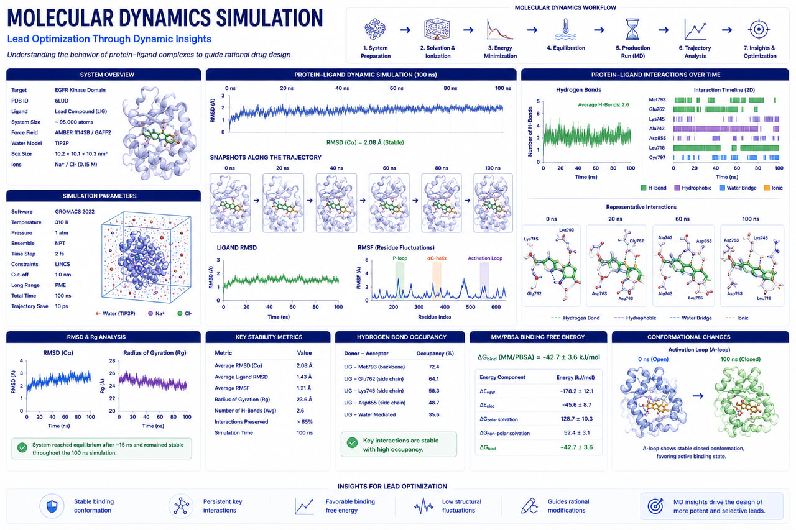

Molecular Design
Refine lead structures for preclinical success.
Enhance binding affinity, kinetic stability, and drug-like properties using GROMACS molecular dynamics, ML-driven QSAR models, and ADMET toxicity filters.

Lead Optimization
Refine hit compounds into selective, drug-like leads.
Improve target selectivity, binding affinity, and metabolic stability while minimizing off-target toxicity.
Molecular dynamics (MD) simulations
Verify binding stability and structural flexibility over time using GROMACS and AMBER.
Free energy calculations
Refine docking predictions with MM-GBSA and Free Energy Perturbation (FEP) scoring.
ADMET predictive modeling
Assess bioavailability, hepatic clearance, BBB permeation, and hERG toxicity using pkCSM and SwissADME.
GROMACSHigh-performance molecular dynamics simulator.
AMBERAssisted Model Building with Energy Refinement suite.
SwissADMEPredicts ADME parameters, drug-likeness, and medicinal chemistry friendliness.
pkCSMPredicts small-molecule pharmacokinetics using graph signatures.
MM-GBSAMolecular Mechanics Generalized Born Surface Area calculations.
Accelerate therapeutic discovery with RASA.
Get in touch with our Pune-based computational drug design experts to coordinate target screens or dynamics calculations.
Start a Project